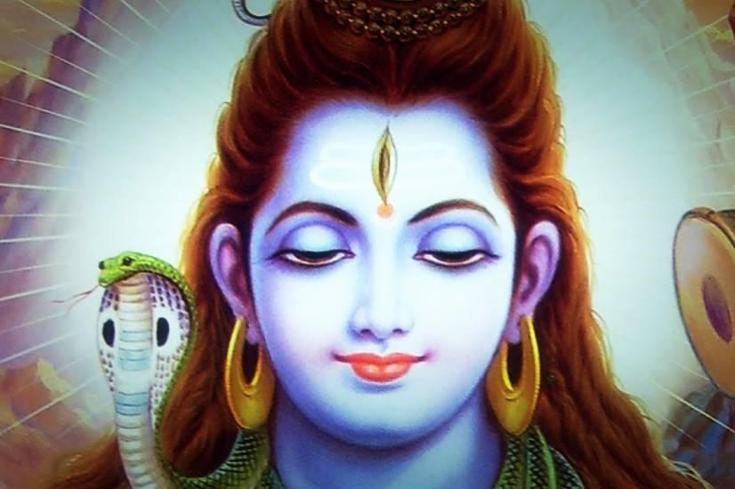
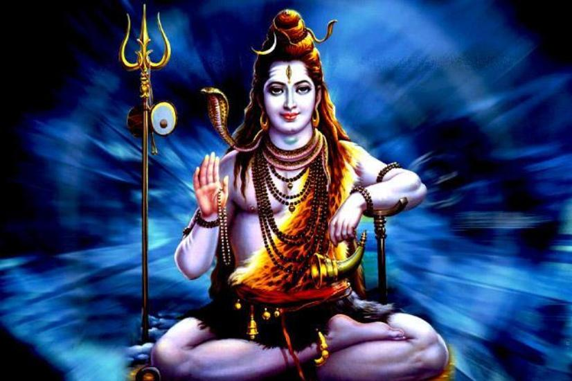
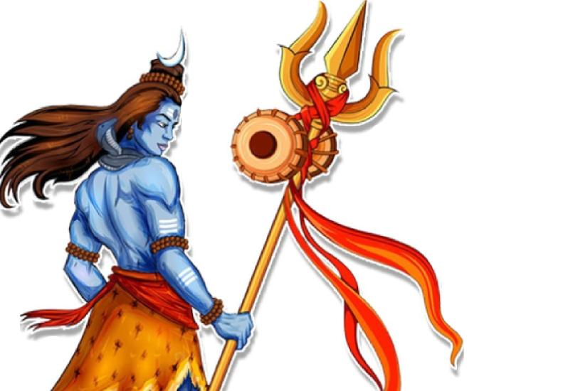
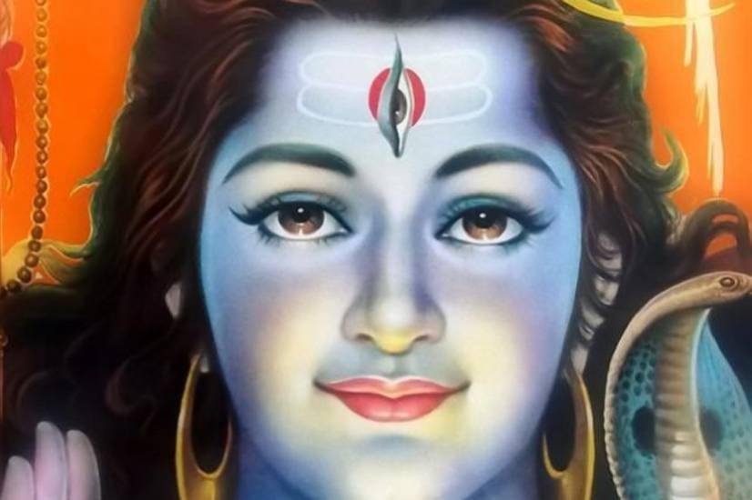
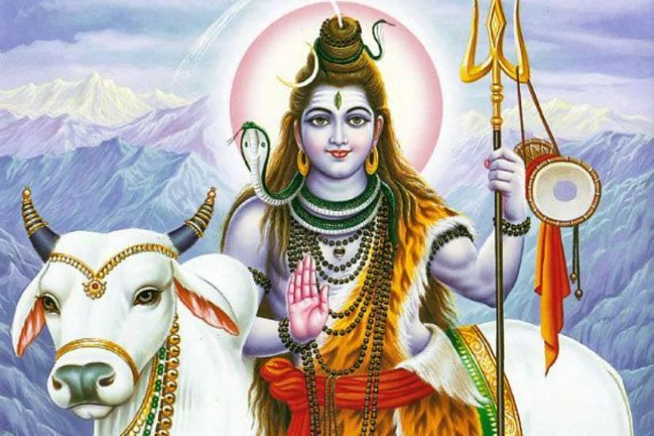
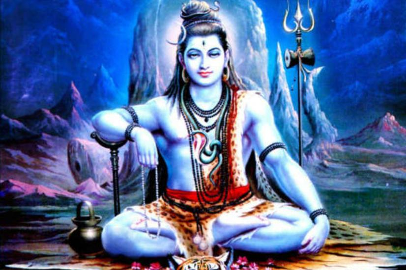

Shiva: The God of Gods
Who is Shiva?
Shiva, the fierce yet supremely calm God in Hindu mythology is termed as ‘Mahadeva’ which means the God of Gods. It is said that the world was created by the tri-Deva who are- Brahma Vishnu and Mahesh. Here Brahma is Brahma Dev who is known as the creator of this world, Vishnu is Lord Vishnu who seats on the Sheeshnaga which is the king of snakes with multiple heads, is the preserver of this universe. And Mahesh who is Lord Shiva is known as the destroyer/ transformer. But out of all the Gods Shiva is termed as Devo ke Dev and is worshiped by almost every single person in India.
Shiva has a total of 1008 names and is worshiped in different parts of the country by a different one. With each name a different personality of Shiva is reflected. Each consists of a story and different traits of Lord Shiva with it. The Sanskrit word Shiva is an adjective which means “Auspicious, Kind and Gracious”. As a proper name, it means “The Auspicious One”, used as a name for Rudra- the danger and anger Lord Shiva.
Some say that Lord Shiva is a Human with supernatural powers as he lived and still lives in the Kailash which exists in Dharti- Earth and not in Swarg or any other heavenly place. While other people very strongly believes that Shiva is not at all a Human but God living in this Earth makin1g it a more beautiful and spiritual place.
Destroyer the word has bigger aspects then destruction, as destroying means death which is the medium for rebirth to a new life. Thus Shiva is not just related with destruction but with regeneration and creation as well. Shiva is both Death and Life.
The appearance and looks of Shiva is completely varied and different from all the other Gods one knows. Shiva represents life along with death. His appearance alone dignifies the power of nature, river, moon, animals and Prakriti. His calm being represent the soulful side of this world and his fierce side shows how harsh and brutal this world can become for people disrespecting and devaluing it.
Symbols of Shiva
The Crescent Moon on Lord Shiva’s head
Shiva bears a crescent moon on his head which symbolizes wisdom, the moon explains that wisdom is beyond mind, but it needs to be expressed with a tinge of mind only. This means that to express the ultimate wisdom of this universe, one does not need plenty of information and knowledge but a little amount of mind.

The no-mind, infinite consciousness requires that little bit of mind to express itself in the manifest world. Thus to express the inexpressible, ultimate piece of wisdom and knowledge, that little amount of mind is required which is the crescent moon on Lord Shiva’s head.
The Trident or Trishul
He holds a Trident or Trishul in his right arm. On the Trident there is fire, a Damru and a mala. The Trishul represents the three aspects of consciousness – waking, dreaming and sleeping, which represents the three Gunas- Satva(goodness, constructive, harmonious), Rajas(passion, active, confused), and Tamas (darkness, destructive, chaotic). So when Shiva holds the Trishul it signifies that Shiva is above all the three states- waking, dreaming and sleeping and yet is the upholder of these three states.

In the word Trishul, Shul means problems and sufferings and Trishul as a whole means which destroys all kind of suffering and pain. The pain is also divided into three forms- the physical pain, the spiritual pain and the ethereal pain. And what relieves one from all the kind of pain in this universe is a Trishul and it is in the hand of Lord Shiva. Thus Shiva is the healer, he is the problem solver.
The Damru
The Damru on the Trishul signifies the Universe which is always expanding and collapsing. When one plays a Damru, it expands then collapses, juts the same way this universe works. It expands until a point of expansion and then it collapses and expands again and the cycle goes on. This simple process is the process of creation and destruction. The concept of Damru is similar to of our heartbeats, the rhythm is never a straight line, it goes up and down and then up. Which tells the period of life, that everything never remains constant, it goes up and down, it get destroyed and is rebuilt. And if the rhythm become a straight line that means your heart has stopped and that means you are dead.

The Damru also symbolizes sound as it is a sound instrument and it produces sound wave which is rhythm and energy. The whole universe is nothing but the function of wave, it is rhythm all around and we are trapped in it living our lives harmoniously. So the Damru explained by Quantum physics also represents the dual nature of the universe.
Vasuki the snake around Shiva’s neck
Snake around lord Shiva’s neck has many sayings and stories behind it. It is said that the serpent is the symbol of alertness. Shiva resides in the state of Samadhi where there is nothing just the inner consciousness. And in that state there no action but just alertness. To describe this alertness there sits a snake on Lord Shiva’s neck to give the impression that may be his eyes are closed due to meditation but his consciousness is awake and he is alert.

Snakes are known to be one of the very dangerous reptiles and are feared by all. To nullify the feeling to fear, Lord Shiva wears the serpent around his neck to show that he controls fear and death and anyone worshiping him will be free of all the fear and danger of this universe.
Some theories also tell that the serpent has three coils around Shiva’s neck depicting past, present and future. That states that Shiva is independent of time and he also controls it.
There is also a story that when the snake species were in endangered, they approach Lord Shiva for Shelter. Lord Shiva gave them shelter by letting them stay in Kailash Parvat. But due to cold weather, the snakes used to approach Lord Shiva for warmth of Body. Thus, He as a protector used to wear snakes as ornament to provide warmth to all of them.
There are other sayings and theories about the snake around Lord Shiva’s neck, of them is that Lord Shiva is known as Pashupatinath, the Lord of Animals. And being the lord of all the animals he has complete control over the behavior of all the animals of this universe. As snake is the most feared and dangerous of all, he wear a snake as an ornament around his neck showcasing that the dangerous of danger also fears him and stays in his control.
The snakes also stands for evil and demonic nature so by wearing a snake Lord Shiva gives the ray of Goodness that no evil can touch him or anyone under his protection.
In Yogic Science the snakes also stands for Kundalini, which is described as a coiled serpent lying dormant in the muladhara chakra of all human beings and descends upwards when one starts ones spiritual journey and becomes increasingly divine oriented. The snake around lord Shiva’s neck clearly makes us understand that Shiva has reached complete divination and has completed the journey to spirituality. And not just that he is constantly engaged with divine powers and spirituality as the snake doesn’t go away but sits on his neck, coiled perfectly and prestigiously indicating Shiva’s active involvement with divinity.
Ganga flowing from lord Shiva’s Head
Ganga on Shiva’s head has many controversial stories behind it. One of which says that Ganga was Shiva’s second wife. The other says that Ganga was Vishnu’s wife along Lakshmi and Saraswati, but all the three wives used to fight a lot so Lord Vishnu gave Saraswati to Brahma and Ganga to Shiva. But due to wrath of Pravati, Shiva’s wife, lord Shiva accepted Ganga as a crown jewel and not his wife.
Out of all the stories and perceptions, the one which is common and known to all is that Ganga is known as Knowledge. Knowledge so deep that it purifies one’s soul. And head is the center of knowledge and heart is the home of love. So Gnga comes out of Shiva’s head because it means its knowledge. Ganga is known to be fierce, stormy, excited and mysterious, same is knowledge, it brings freedom, it brings motion, it has depths, it has mysterious, it has calmness and it has agitations. Knowledge brings all the emotions together and also brings them apart. And all this characteristics are to be found in Ganga and Shiva wear it as a jewel.
Lord Shiva Third Eye
What happens if Lord Shiva opens his third eye? The third eye of Shiva is the eye which killed Kama, the God of Lust and desire. Kama tried to bring the feeling of desire into Shiva for Parvati after the death of his first wife Sati. He tried Shiva to open his eyes and feel romantic for Parvati but instead Shiva opened his third and burnt Kama to ashes. Thus it is said that the third eye signifies that there is no desire in this world, men will not get attracted to women, bull will not get attracted to cow, there will be no reproduction and therefore there will be no life left in this world.

This is why it is said that when Shiva opens his third the world gets destroyed not by some battle or supernatural calamity but by having no desire to produce life in this universe. Due to this reason Shiva is known as the destroyer. Desire bringslove, affection, contentment, compassion; it also evokes negative emotions; anger, dissatisfaction, sorrow which causes destruction within the person itself. So Shiva opens his third eye to destroy desire from causing any further destruction.
Shiva’s Blue Throat
The legend of Lord Shiva drinking the most poisonous venom to save this earth from it is famous and known to all. The Venom which Shiva drank did not flow from his mouth to stomach but it resided in throat itself. The color of the venom is said to be blue and as it got settles in Shiva’s throat so the color of the throat changed and turned into blue. Shiva’s body color is said to be white as camphor. His white complexion signifies the Snow Mountains and his blue throat sparkle like a beautiful ornament on his neck.

Also blue means sky, it signifies infinity and limitlessness. It portrays the fact of having no shape. Thus Shiva is not termed as to be completely human, he has no shape he was never a person. To symbolize the unfathomable, the infinite Divinity relatable to people, the ancient Rishish made a form. The Whole world is filled with Shiva and Shiva’s body is in the whole universe.
Nandi the Bull
Nandi is the bull which serves as Shiva’s mount or vahana. Shiva known as Pashupati is the lord of the animals and thus his surroundings are ought to be filled with animals and species of kind. The Bull is denoted as the symbol of Dharma or righteousness in the world.

And lord Shiva riding the bull depicts that Shiva is righteous no matter what. And when you worship Shiva righteousness and truthfulness will be with you and no Adharm can harm or touch you.
Shiva Sits on Tiger Skin
It is seen in the paintings and scriptures that Lord Shiva sits mightily on a piece of Tiger skin. According to folklore, the tiger skin signifies Shiva as the controller of all the powers in the world.
But apart from that, there is a well-known story of Shiva wearing the tiger skin and sitting on it.

Shiva used to travel a lot and once he was travelling in a forest where some Rishis with their wives used to live. The wives got attracted to Shiva by his great physique and bare body. Seeing that the Rishis conspired and dug a pit where Shiva used to go for a walk daily. When Shiva arrived there the Rishis using all their powers created a tiger to leap out of that pit. But their efforts were useless. It was no big deal for the lord of animals. Shiva very easily killed the tiger, took off its skin and draped it around his body. And thereafter from that incident Shiva started wearing tiger Skin what we see today in paintings and pictures.
Get in Touch
Have An Enquiry? Write To Us…
Popular Pilgrimage Packages
Information Links and Downloads
Talk to Kailash Yatra Expert
Submit your contact number.
Kailash Yatra Expert will call You within 1 minute.
(24X7 Free Service, India Number only)
Get All Details on Mobile


Related Packages

Kailash Mansarovar Aerial Darshan
2 Night / 3 Days
- Exclusive Aerial Darshan
- Stay at Best Hotel
- Free Gifts Included
Route : Lucknow → Nepalgunj(2N) → Lucknow →+0

Adi Kailash By Heli ex Kathgodam
6 Night / 7 Days
Route : Kathgodam → Pithoragarh(2N) → Gunji / Nabi / Napalchu (3N) →+2


Frequently Asked Questions
Related Blogs


Kailash Yatra Duration: How many days are required for the Kailash Mansarovar Yatra?


What are the different ways of travelling to Kailash?: Explore the Options for reaching sacred Kailash Mansarovar

Kailash Mansarovar Yatra in 13 Days: A Complete Guide to plan the 13 day trip to Kailash Mansarovar

How to undertake the Kailash Mansarovar Yatra?: A Complete Step-by-Step Guide on How to Prepare for Kailash Mansarovar Yatra

What is the Culture of Lake Mansarovar?: Understanding What makes Lake Mansarovar such a Special Place

How to Apply for the Kailash Mansarovar Yatra?: Everything You Need to Know About Applying for Mansarovar Yatra
We Got Featured in the Media


 Call
Call  WhatsApp
WhatsApp  Enquiry
Enquiry Connect with us :
Office Address :
Trip To Temples, 201, JOP Plaza
Sector 18, Noida, 201301
Uttar Pradesh, India
Call : +91-8510007751
E-mail : info@triptotemples.com